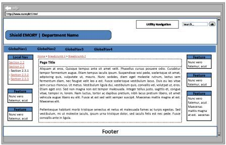

How to create and use Dreamweaver templates, part 2: wireframes
 A follow-up to Part 1: introducing Dreamweaver Templates, this post urges you to pause before you start coding and to create a very basic design using wireframes first.
A follow-up to Part 1: introducing Dreamweaver Templates, this post urges you to pause before you start coding and to create a very basic design using wireframes first.
Example Wireframe
I recently created a barebones wireframe: you can see a screenshot of the 3-column version of the secondary page below.

What are Wireframes?
When you're preparing to create a Dreamweaver Template for your web site, you first need to make some design decisions that may impact the order in which you place regions and divs. The best way to make these decisions is to create wireframes.
Wireframes:
- are a visual way to map out your design decisions for web sites
- can be created at any level (from absolute barebones to a fully fleshed-out graphic design with all page layouts detailed)
- are a great way to get input and feedback from stakeholders, designers, and developers so you can tweak the design (either layout or graphic) BEFORE you begin developing.
How to Use Wireframes in Dreamweaver Template Creation
The barebones wireframes are the most useful for your initial Dreamweaver Template creation.
At this stage, you just want to know what pieces will fall into what order in your template (so you don't have to re-swizzle their position too much with CSS).
You can sketch and alter wireframes on a piece of paper, a dry erase board, or with software. I recently created these barebones wireframes using PowerPoint.
For More Information
- The what, when and why of wireframes
- Design before you build with wire frames (TechRepublic)
- Wireframing With Patterns (UX Matters)
- Wireframing Tools (Information Architecture Institute)
- Wireframing Tools (Yahoo Design Pattern Library)